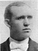
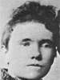

Home
Histories
Charts
Photos
Maps
Restricted
News
Info
Contact
|
(In these pages, the book  symbol is a link to a history, and the chart symbol is a link to a history, and the chart  symbol is a link to a family group chart.) symbol is a link to a family group chart.)
 |
James Burton
and Isabella Walton |
----> |
  |
William Walton Burton (Little Willie)
Born 23 MAR 1833 Bradford,Yorkshire,England
Died 27 JUN 1918 OGDEN,Weber,Utah
Ellen Fielding
Born 9 FEB 1841 Preston,Lancashire,England
Died 8 MAR 1906 OGDEN,Weber,Utah
Married 2 NOV 1862 Salt Lake City, Utah
William Walton also married Rachel Fielding 28 MAR 1856 Endowment House,Salt Lake City, Utah
William Walton also married Sarah Ann Fielding 23 May 1870 Salt Lake City, Utah
|
  |
Joseph Fielding
and Hannah Greenwood |
More family photos
Children:
  |
Mercy Rachel Burton
Born 29 JUL 1863 Kaysville,Davis,Utah
Died 27 OCT 1943 Salt Lake City, UT
Married
Thomas Jordan Stevens 14 DEC 1885 Salt Lake City, Utah
Picture of Mercy Stevens with two grandchildren - Lawrence and Dorothy (circa 1935).
The 1st child of William Walton Burton and Ellen Fielding
|
| 12 |
Margaret Burton
Born 18 SEP 1865 OGDEN,Weber,Utah
Died 10 FEB 1908 Afton,Lincoln,Wyoming
Married
Hyrum Heap Barlow 2 JAN 1889 LOGAN,Cache,Utah
Picture of Margaret's family in 1899.
Married
David W. Rainey 19 OCT 1904 Afton, WY
The 2nd child of William Walton Burton and Ellen Fielding
|
  |
Heber Fielding Burton
Born 6 MAR 1868 Salt Lake City, Utah
Died 16 MAR 1943 Afton,Lincoln,Wyoming
Married
Mary Delecta Ballantyne 14 DEC 1898 Salt Lake City, Utah
The 3th child of William Walton Burton and Ellen Fielding
|
| * |
Hyrum Fielding Burton
Born 11 OCT 1870 OGDEN,Weber,Utah
Died 5 MAR 1871
The 4th child of William Walton Burton and Ellen Fielding
|
12 |
John Fielding Burton
Born 26 JUN 1872 OGDEN,Weber,Utah
Died 21 OCT 1959 Preston,Franklin,Idaho
Married
Muzetta Porter 8 APR 1897 Salt Lake City,Utah
Married
Florence Adora Porter 15 NOV 1901 Salt Lake City, Utah
The 5th child of William Walton Burton and Ellen Fielding
|
| * |
Lucy Burton
Born 16 MAR 1875 OGDEN,Weber,Utah
Died 24 MAR 1875
The 6th child of William Walton Burton and Ellen Fielding
|
|
Mabel Burton
Born 19 MAY 1877 OGDEN,Weber,Utah
Died 21 JUL 1892
Married
George Joseph Smuin 24 AUG 1892 Of Ogden,Weber,Utah
This information doesn't make sense as is. The 24 Aug marriage date is also the date of their sealing in the Logan temple, but I see no reference to a marriage before they died (George died on 4 July 1892). This requires further research.
The 7th child of William Walton Burton and Ellen Fielding
|
|
Reuben Fielding Burton
Born 10 MAR 1880 OGDEN,Weber,Utah
Died 19 MAR 1947
Married
Caroline Charlotte Call 27 FEB 1908 Salt Lake City, UT
The 8th child of William Walton Burton and Ellen Fielding
|
|
Back to Burton Family History web pages.
|

{kind=link}
{kind=link}